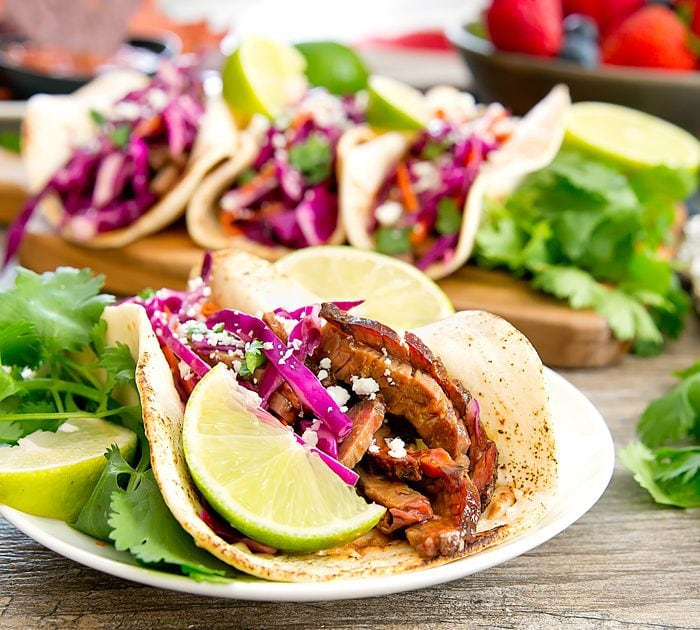

Brisket Tacos

Description
Laura got me a smoker for my birthday the year we moved up here to upstate
New York, and I immediately set about learning how to smoke all sorts of
different foods. Over the years, I’ve made smoked salmon, smoked sweet
potatoes, pulled pork and a pizza that only tasted like smoke (oops). But
one of the recipes that I go back to again and again is smoked brisket. In
fact, when the weather starts to turn chilly every Fall, I’ll typically
smoke a couple of briskets and then store them in the freezer for easy
winter meals. Looking out at snow that never seems to melt gets old in the
winter, but having smoked brisket sandwiches for dinner provides some
mental warmth at least!
Ingredients
For the Brisket
- 2 Tbsp paprika
- 2 Tbsp onion powder
- 2 Tbsp chili powder
- 2 Tbsp chili powder
- 1 Tbsp black pepper
- 1 Tbsp kosher salt
- 1 Tbsp garlic powder
- 2 tsp dry mustard
- ½ tsp cayenne pepper
- 8-10 pound Certified Angus Beef® brand brisket
- apple wood chunks
- lump charcoal
- large disposable aluminum pan
- large disposable aluminum pan
- 1 cup beef stock
For the Guacamole
- 2 avocados pitted and peeled
- ½ cup red onion diced
- 1 jalapeno seeds and ribs removed, diced
- Juice of 1 lime ~2 Tbsp
- ½ tsp garlic minced
- ½ tsp salt
- ½ tsp chipotle powder
- ¼ cup fresh cilantro minced
For the Tacos
- 6 medium flour tortillas
- 3 cups smoked brisket chopped
- ½ cup cherry tomatoes sliced into quarters
- ¼ cup red onion thinly sliced
- fresh cilantro
- fresh limes
Steps
For the Brisket
-
Using a small bowl, combine the spices for the rub. Generously apply rub
to all sides of brisket; let sit at room temperature for an hour or in
refrigerator overnight.
- Preheat smoker to 225°-250°F.
-
Once the smoker has reached a stable temperature, add the wood chunks
directly to the coals. Put the grate in place and put the brisket on the
grates with the fat cap (the fattier side) up. Insert a probe
thermometer into the center of the brisket, close the lid, and walk
away.
-
Occasionally check the temperature of the smoker to ensure it stays
within 225°-250°F.
-
When the internal temperature of the brisket reaches 165°F, remove the
brisket and place in the disposable aluminum pan. Pour the stock into
the pan and then wrap the pan (brisket and all) and place it back on the
smoker.
-
When the internal temperature of the brisket reaches ~190°, remove the
brisket from the smoker. Leave the brisket in the aluminum pan and let
it rest for at least 30 minutes before slicing.
-
When slicing, I typically remove and discard most of the fat cap. Then I
slice the meat itself into large slices. These can either be frozen or
stored in the refrigerator. Then when making the tacos (or other recipe
using smoked brisket) I chop several slices into small pieces and then
reheat it in a dry skillet.
For the Guacamole and Tacos
-
Add all guacamole ingredients to a medium bowl. Using a fork, mash until
well combined.
- Spread ~2 Tbsp of guacamole onto each of the flour tortillas.
-
Spread chopped brisket evenly over tortillas and then top with chopped
tomatoes and onions.
-
Sprinkle freshly chopped cilantro and squeeze a fresh lime over each
taco before serving.